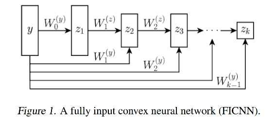
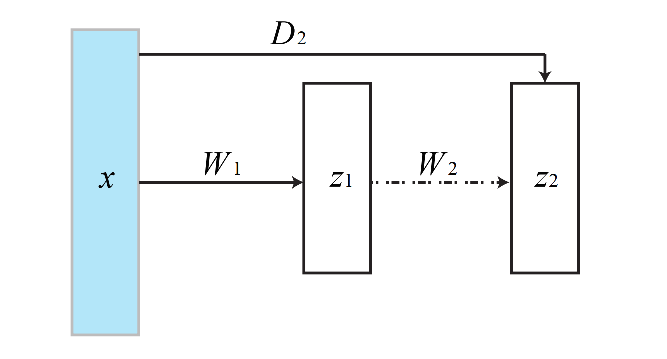
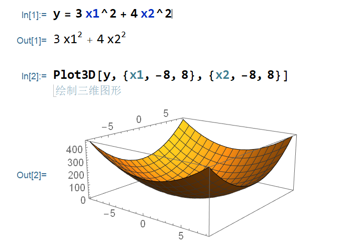
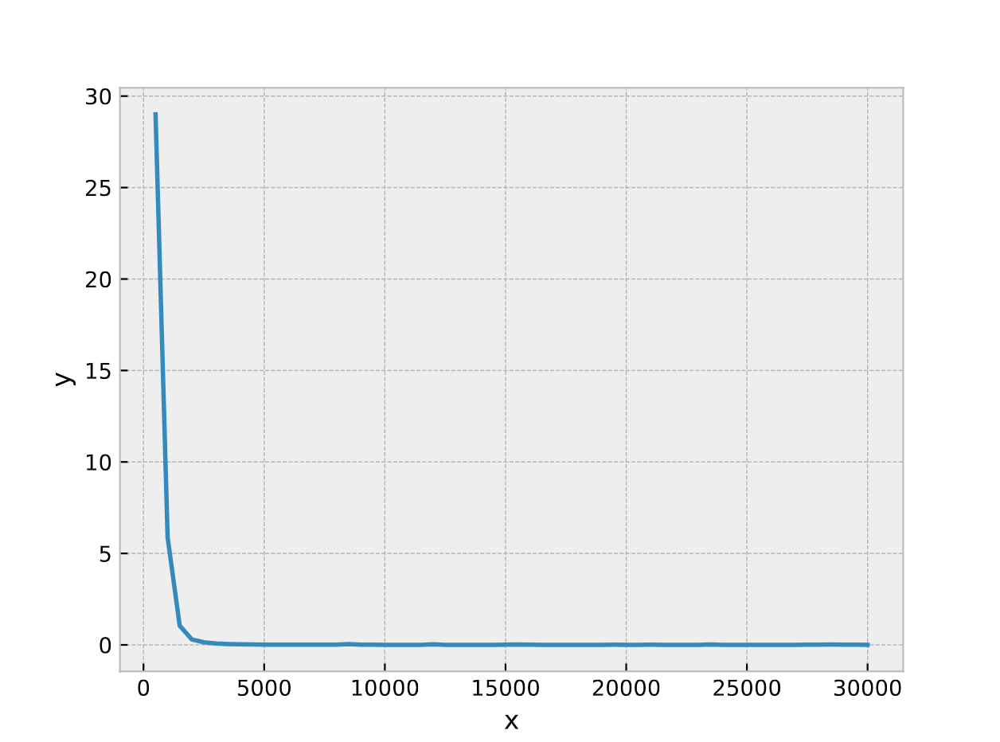
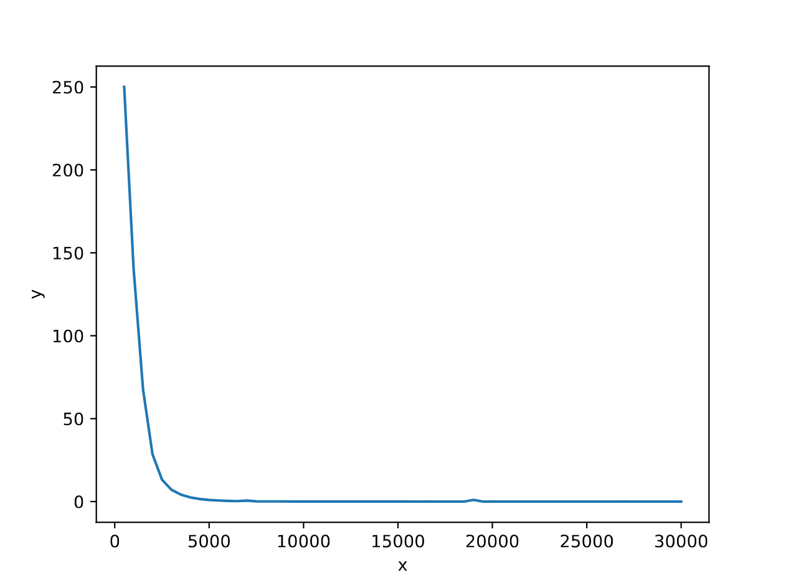
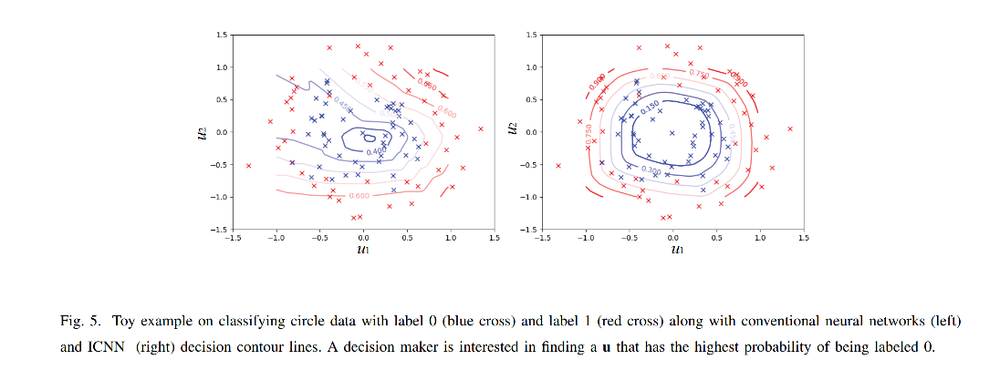
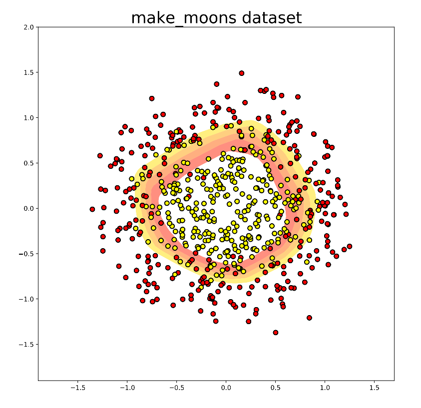
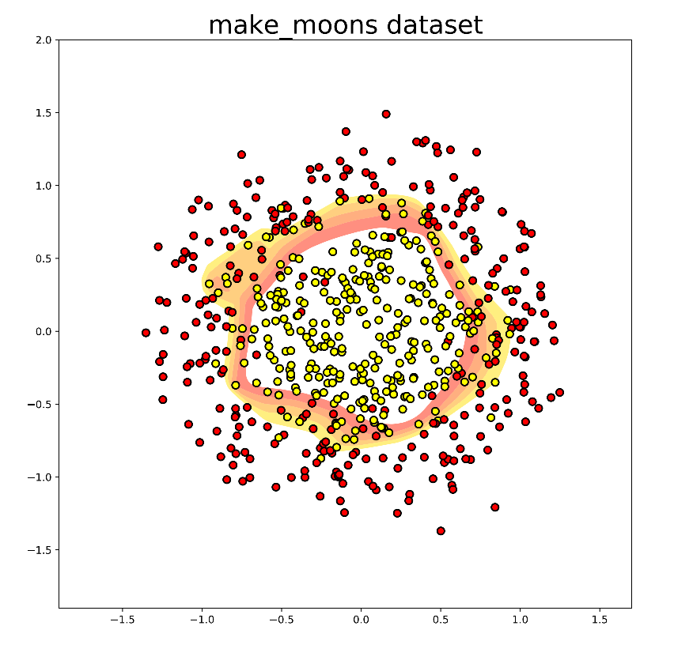

《Input Convex Neural Networks》
《Optimal Control Via Neural Networks: A Convex Approach》
对于复杂系统的控制往往分为两步，对系统的辨识和控制器的设计。 深度神经网络被证明在辨识任务中取得了重大成功，但是，由于这些辨识出来的系统往往是非线性和非凸的，其控制器很难设计，所以，实际系统往往还是用线性模型去逼近，尽管这些线性模型的拟合能力很弱，因此，往往设计出来的控制器的性能都不行。
这两篇文章，主要提出了ICNN及其改进网络结构，ICNN的特点就是对于输入是凸的，第一篇文章主要提出了ICNN这一网络结构，通过将神经网络的前向通道中的权重设置为非负值，这一简单的改变，就可以将神经网络变为输入凸的，且该网络的拟合能力并为受到较大的影响。
这篇文章主要完成3点：
- 复现ICNN，原版的ICNN是用tensorflow写的，代码不全，且使用了较老的库版本，运行不了，在此采用pytorch进行复现出一个通用程序。
- 对于一个给定的函数：\(y=3x_1^2+4x_2^2\)，利用普通的DNN，和ICNN进行对比，验证ICNN的拟合能力（验证的过程使用相同的网络层数，每层的节点数，学习率等参数）。
- 对于《Input Convex Neural Networks》中的simulation中的synthetic 2D example和《Optimal Control Via Neural Networks: A Convex Approach》中的APPENDIX中的Toy Example分别进行复现及仿真验证。
ICNN原理及证明
ICNN网络结构

\[z_{i+1}=g_{i}\left(W_{i}^{(z)} z_{i}+W_{i}^{(y)} y+b_{i}\right), \quad f(y ; \theta)=z_{k}\]，
Figure1是全连接的凸的，k层ICNN，记为：FICNN，令输入记为：\(y\)，\(z_i\)记为每一个激活函数的输出，\(\theta\)记为所有的参数：\(\theta=\left\{W_{0: k-1}^{(y)}, W_{1: k-1}^{(z)}, b_{0: k-1}\right\}\)，\(g_i\)是非线性激活函数，网络凸的性质的主要结果如下：
结论：函数\(f\)对于\(y\)是凸函数，当所有的\(W_{1: k-1}^{(z)}\)是非负，且所有的\(g_i\)是凸的非增函数
分析：
ICNN网络结构中，从输入直接传递到隐含层的叫"passthrough"，这样的连接在传统的前馈神经网络中是没有必要的，因为前面的神经网络的层的信息总是会被映射到下一个神经网络层中，但是在ICNN中，由于\(W^{(z)}\)被限制为非负，所以导致拟合能力下降，且前面网络的信息无法被传递到下一个层中，因此，需要使用额外的passthrough。
对于\(b_i\)来说，放到前向传播中，或者passthrough中，都是等价的。
passthrough中的weight和bias都是可以为负的，没有限制。
ICNN输入凸的证明
定义：给定函数\(f: \mathbb{R}^{d} \rightarrow \mathbb{R}\)，当\(x\)在整个定义域中，都满足\(|f(\mathbf{x})-\hat{f}(\mathbf{x})| \leq \varepsilon\)，那么，就说函数\(\hat{f}\)可以以精度\(\varepsilon\)逼近函数\(f\)。
定理：对于任何在某个紧集上的Lipshchitz凸的连续函数，存在一个神经网络，其权重是非负的，且激活函数使用的是Relu函数，来满足定义1中的定义。
引理：给定一个连续的Lipschitz函数\(f: \mathbb{R}^{d} \rightarrow \mathbb{R}\)，它可以被一系列仿射函数的最大值所表示，即，存在\(\hat{f}(\mathbf{x})=\max _{i=1, \ldots, N}\left\{\mu_{\mathbf{i}}^{T} \mathbf{x}+b_{i}\right\}\)，使得对于所有的\(x\)，满足\(|f(\mathbf{x})-\hat{f}(\mathbf{x})| \leq \varepsilon\)
证明过程：
主要采用了两个凸优化中基本的定理：
- 凸函数的非负先行组合还是凸函数
- 凸函数和凸的非减的函数还是凸函数
证明是通过构造性的证明，我们先构建一个神经网络，使用Relu函数，其权重有正有负，然后通过构造负的输入，可以将该神经网络不同层之间的权重可以限制为非负。
证明的思路是首先证明一个凸函数可以使用一系列仿射函数的最大值表示（凸优化中的结论），然后将该最大值用神经网络的形式进行表示（这两篇文章的工作），换句话说，这两篇文章就是证明了这样的神经网络可以转换为一系列仿射函数的最大值。
证明：
首先考虑两个仿射函数的最大值：
\[f_{C P L}(\mathbf{x})=\max \left\{\mathbf{a}_{1}^{T} \mathbf{x}+b_{1}, \mathbf{a}_{2}^{T} \mathbf{x}+b_{2}\right\}\]
我们的目标是将这个最大值，用神经网络来表示，将其重写为：
\[f_{C P L}(x)=\left(\mathbf{a}_{2}^{T} \mathbf{x}+b_{2}\right)+\max \left(\left(\mathbf{a}_{1}-\mathbf{a}_{2}\right)^{T} \mathbf{x}+\left(b_{1}-b_{2}\right), 0\right)\]
现在定义一个2层的神经网络：

其中，\(W_1\)表示第一层的权重\(\mathbf{a}_{1}-\mathbf{a}_{2}\)以及bias\(b_{1}-b_{2}\)，\(W_2\)表示为第二层，\(D_2\)表示passthrough，其权重为\(a_2\)，bias为\(b_2\)。
上面的定义可以直接扩展到\(K\)个线性函数的情形：
\[f_{C P L}(\mathbf{x})=\max \left\{\mathbf{a}_{1}^{T} \mathbf{x}+b_{1}, \ldots, \mathbf{a}_{K}^{T} \mathbf{x}+b_{K}\right\}\]
将\(f_{C P L}(\mathbf{x})\)写成一个嵌套的最大值的仿射函数的最大值，为了简化表示，将\(L_{i}=\mathbf{a}_{i}^{T} \mathbf{x}+b_{i}, L_{i}^{\prime}=L_{i}-L_{i+1}\)，然后： \[ \begin{aligned} f_{C P L} &=\max \left\{L_{1}, L_{2}, \ldots, L_{K}\right\} \\ &=\max \left\{\max \left\{L_{1}, L_{2}, \ldots, L_{K-1}\right\}, L_{K}\right\} \\ &=L_{K}+\sigma\left(\max \left\{L_{1}, L_{2}, \ldots, L_{K-1}\right\}-L_{K}\right) \\ &=L_{K}+\sigma\left(\max \left\{\max \left\{L_{1}, L_{2}, \ldots, L_{K-2}\right\}, L_{K-1}\right\}-L_{K}, 0\right) \\ &=L_{K}+\sigma\left(L_{K-1}-L_{K}+\sigma\left(\max \left\{L_{1}, L_{2}, \ldots, L_{K-2}\right\}-L_{K-1}, 0\right), 0\right) \\ &=\ldots \\ &=L_{K}+\sigma\left(L_{K-1}^{\prime}+\sigma\left(L_{K-2}^{\prime}+\sigma\left(\ldots \sigma\left(L_{2}^{\prime}+\sigma\left(L_{1}-L_{2}, 0\right), 0\right), \ldots, 0\right), 0\right), 0\right) . \end{aligned} \] 最后一行表示的其实是一个\(K\)层的神经网络，其每一层分别是： \[ \begin{aligned} &z_{1}=\sigma\left(L_{1}-L_{2}, 0\right)=\sigma\left(\left(\mathbf{a}_{1}-\mathbf{a}_{2}\right)^{T} \mathbf{x}+\left(b_{1}-b_{2}\right)\right)\\ &z_{2}=\sigma\left(L_{2}^{\prime}+z_{1}, 0\right)=\sigma\left(z_{1}+\left(\mathbf{a}_{2}-\mathbf{a}_{3}\right)^{T} \mathbf{x}+\left(b_{2}-b_{3}\right)\right)\\ &\ldots \ldots\\ &z_{i}=\sigma\left(L_{i}^{\prime}+z_{i-1}, 0\right)=\sigma\left(z_{i-1}+\left(\mathbf{a}_{i}-\mathbf{a}_{i+1}\right)^{T} \mathbf{x}+\left(b_{i}-b_{i+1}\right)\right)\\ &\ldots \ldots\\ &z_{K}=z_{K-1}+L_{K}=h_{K}\left(z_{K-1}+L_{K}\right)=\left(z_{K-1}+\mathbf{a}_{K}^{T} \mathbf{x}+b_{K}\right) \end{aligned} \] 尽管该神经网络可以用来表示仿射函数的最大值，但是它不是凸的，因为其系数可正可负，而且，每一层都包含了一个权重和输入的内积 \(\left(\mathbf{a}_{i}-\mathbf{a}_{i+1}\right)^{T} \mathbf{x}\)，系数未必是非负的，为了解决这个问题，将输入\(x\)扩展为\([x, -x]\)，即： \[ \hat{\mathbf{x}}=\left[\begin{array}{c} \mathbf{x} \\ -\mathbf{x} \end{array}\right] \] \(\mathbf{h}^{T} \mathbf{x}\)的内积可以表示为： \[ \begin{aligned} \mathbf{h}^{T} \mathbf{x} &=\sum_{j=1}^{d} h_{i} x_{i} \\ &=\sum_{i: h_{i} \geq 0} h_{i} x_{i}+\sum_{i: h_{i}<0} h_{i} x_{i} \\ &=\sum_{i: h_{i} \geq 0} h_{i} x_{i}+\sum_{i: h_{i}<0}\left(-h_{i}\right)\left(-x_{i}\right) \\ &=\sum_{i: h_{i} \geq 0} h_{i} \hat{x}_{i}+\sum_{i: h_{i}<0}\left(-h_{i}\right)\left(\hat{x}_{i+d}\right) \end{aligned} \] 其所有的系数都是非负的。
因此任何系数矩阵和输入向量的内积都可以写成一个非负系数矩阵和扩展输入\(\hat{\mathbf{x}}\)的内积，因此，为了不失去一般性，可以限制每一层的权重都是非负的，这样的神经网络则是输入凸的。
ICNN基本结构Pytorch复现
\(y=3x_1^2+4x_2^2\)仿真算例
仿真算例：\(y=3x_1^2+4x_2^2\)

训练数据生成
1 | x1 = torch.linspace(-5, 5, steps=300)+torch.rand(1) |
在-5, 5中随机采样1000个数据点
验证方法：对单个目标进行验证时，当输入是[2, 2]时，理论输出应该是[28]，同时，输出其MSE的数值并画出其图片。
对比其拟合能力：
普通神经网络的拟合能力
1 | class Model(nn.Module): |
输出：
1 | 0 500 29.005009 |

ICNN的拟合能力
1 | class CvxModel(nn.Module): |
输出：
1 | 0 500 250.070984 |

可以看出，在使用相同adam优化器参数的条件下，DNN相比ICNN，优化的速度更快。
而当将adam优化器的参数从\(1e-3\)改变为\(1e-2\)后，仿真结果如下：
1 | ################################################## |
对于上面所仿真的普通的DNN，若将其adam优化器同时改变之后，仿真结果如下：
1 | ################################################## |
Adam优化器的参数对于网络的训练有着很大的影响，经过实验仿真可得：传统的DNN和ICNN都能找到一组Adam优化器参数，使得其训练效果较好。
原始论文中的仿真验证的复现
第二篇论文中给出了一个二分类问题的仿真，二维输入变量，每一个维度的范围是\([-1, 1]\)，输出是\(\{0, 1\}\)两个类别，随机生成的内外两个圆的坐标数据。内层的圆的标签是\(0\)，外层圆的标签是\(1\)，假设我们的控制器的目标是想找到一个控制输入\(u\)，使得输出\(y\)为\(0\)的可能性最大，优化问题可以分两步解决，首先，学习出一个从\(u\)到\(y\)神经网络分类器，然后找到控制输入\(u\)使得神经网络的输出最小。

上图显示了普通NN和ICNN的决策边界，网络包含两层隐藏层，每一层有200个神经元，左边的图显示出了传统的神经网络，会有许多的之字形的的边界，也就是意味着决策是非凸的，所以优化的时候会存在许多局部最优值，而右边的图显示了ICNN的决策边界，可以看出，优化决策是一个凸优化问题，可以找到全局最优解。
由于原始论文中未给出原始的代码，所以本文使用PyTorch进行了复现仿真对比。


第一幅图是使用ICNN进行的仿真所画的等高线，等高线的数值从内到外分别是\([0.150, 0.300, 0.450, 0.600, 0.750]\)，可以看出其凸的性质很强，对于inference来说，需要求解的是一个凸优化问题。
第二幅图是使用NN进行的仿真所画出的等高线，等高线的数值从内到外分别是\([0.150, 0.300, 0.450, 0.600, 0.750]\)，可以看出其非凸的性质很明显，若对于复杂问题，非凸优化容易陷入局部最优，且没有全局最优解的保证，而ICNN，使用gradient descent即有全局最优解的保证和证明。
未来展望
ICNN是一种2016年提出来的新型的神经网络结构，用于解决传统的神经网络难以inference的问题，同时，经过仿真验证，ICNN的拟合能力损失不大。不过经过检索，使用ICNN结构的发表在期刊上只有几篇文章，有很多篇都是发表在了会议上(ICML)，主要都是将ICML结合到特定的应用场景中。
《Data-Driven Solution for Optimal Pumping Units Scheduling of Smart Water Conservancy， 2020》这篇文章中作者在最后的展望中提到了”Additional effort is also needed to develop data-driven or learning-based models with convex characteristics of input–output dynamic relation, e.g., the input convex neural network that is able to model the convex optimization problem and obtain the optimal control solutions.“